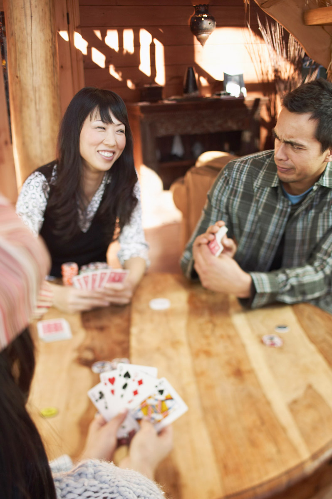

Module 7—Principles of Chemical Equilibrium
 Explore
Explore

© 2008 Jupiterimages Corporation
What defines an equilibrium? You may be surprised to learn that an equilibrium is defined as a system that has constant properties and appears not to change. In the lakeside example from Get Focused, the water level of the lake and the quantity of oxygen dissolved in the lake’s water are two examples of equilibria that exist. Can you think of other examples of systems around you that appear not to change and may be equilibrium systems?
Reconsider the example of the lakeside cabin. Either during a rainstorm or at night when all your friends have come inside and no one leaves or enters, an equilibrium has established in the cabin. The equilibium has established because the number of people in the cabin remains constant. Because no one can come or go, the system (the cabin and its occupants) is a closed system.
Equilibrium can appear in one of two ways: as a static equilibrium or as a dynamic equilibrium.
During the evening, the position of people inside the cabin could resemble a dynamic equilibrium. This would be true if the number of people playing cards inside the cabin, at any given time, were to remain the same. Over the evening, people could enter and leave the card game, but the number of people at the table at any given time would have to remain constant. As you can see from this example, in a dynamic equilibrium there is a change, but the change is balanced by two processes. In this example the balance is with the number of people entering and leaving the card game; for every person that enters, one person must leave so that the number of people in the game remains constant.
equilibrium: the state of a closed system in which the system does not appear to change
For a chemical system, physical properties, like colour, remain constant and concentrations of substances within the system do not change.
static equilibrium: the idea that forces on an object are opposing and equal
The object remains constant because no changes are happening internally.
dynamic equilibrium: the idea that there is a balance between two opposing processes (forward and reverse) occurring at the same rate
The balance between the forward and reverse processes maintains the system’s appearance of constant properties, in spite of change that has occurred internally.
closed system: a system that is separated from its surroundings by a definite boundary so that energy can enter and leave the system but matter cannot
macroscopic: can be observed with the unaided eye or other senses
microscopic: cannot be observed with the unaided eye or other senses
Now consider the lakeside cottage system more broadly. Consider the closed system to include the cabin, its immediate surroundings, and the number of people not only in the cabin, but in the immediate surroundings as well. In this broader system, no one comes or goes. As such, it is a static system. In the example of this broader system, it would be possible to have a change in microscopic properties without having a change in macroscopic properties.
You may also have noticed that these examples describe not only static and dynamic equilibrium, but they also describe two different equilibrium states. For example, the number of people expected to be in the cabin when the weather is sunny, is much different than it would be during a rainstorm or at night. Each of these situations is an equilibrium because of the observation of a constant number of people inside the cabin. However, these two equilibrium states are different. Can you think of a reason to account for the difference between the two equilibrium states?
All systems, including those at equilibrium, are influenced by external forces and conditions. Both rain and night are conditions that appear to encourage people to congregate inside the cabin. Under these conditions you can expect one equilibrium state. When the conditions change, so can the equilibrium.
open system: a system in which both matter and energy can enter and leave the system
Can you predict what might happen to the equilibrium situation of people in the cabin if you expect more friends to arrive throughout the day? As you might expect, adding more people means that your system is no longer closed. An open system is one in which matter can be exchanged with its surroundings. In an open system it is much more difficult to predict changes in equilibrium, since it is more difficult to isolate the matter you wish to study.
 Try This
Try This
Do All Reactions Go to Completion?
Purpose
In this investigation you will observe videos of two chemical
systems, and you will write reaction equations to describe the chemical
changes you observe.
Read
Read pages 674–675 in the textbook to learn more about the different types of equilibrium and systems.
Step 1: View “Reaction 1: HCl(aq) + Mg(s)” to observe the components of the system and the change that occurs. Write a balanced chemical equation to describe the changes observed. You may wish to view the video more than once to obtain all the information you need.
Step 2: View “Reaction 2: Shaking the Blues” to observe the components of the system and the change that occurs. Write a balanced chemical equation to describe the changes observed. As you watch the video, observe changes to the colour of the system. What do your observations suggest about the completeness of the reaction and your understanding of chemical equilibrium?
Analysis
TR 1. Which reaction(s) proceeded to completion?
TR 2. How did you describe whether a reaction proceeded to completion in the chemical equations you wrote? How did you describe a reaction that did not appear to be complete?
TR 3. Which system(s) demonstrated that an equilibrium had been established? Explain your reasoning.
Save your responses in your course folder, and submit a copy to your teacher.